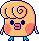
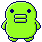
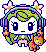

tamas I've raised
pix party
- Mametchi magician
uni
These are the sprites of all the characters I've raised on my uni! My goal is to collect all possible characters, including those in the DLCs at some stage.
Baby


Child

Teens

Adults



Adults (Sanrio)
On the Uni, each tama also comes with a personality as well as the ability to accessorize them. This allows for a much more unique range of tamas to each player. You can see each of my past tamas and their details under the read more.
Child 1 to 5

Neliatchi
Timid
Favourite item: Stuffed Animal
Timid
Favourite item: Stuffed Animal
My thoughts
My first child on the uni, I fell in love with her!! I actually initially didn't like her design but seeing her with her shy animations changed my heart.
Kikitchi
Polite
Favourite item: Sauna Stove
Polite
Favourite item: Sauna Stove
My thoughts
He's so stinkin' cute in his little tiara, pink bow and purple balloons! I'm not sure why he always cries when he's outside in the rain... maybe he's a lil sensitive soul.
Woopatchi
Reserved
Favourite item: Blanket
Reserved
Favourite item: Blanket
My thoughts
I'm so sorry but I found this particular Woopatchi so hard to care for! Her hunger goes down so quickly...
Weeptchi
Honest
Favourite item: Microphone
Honest
Favourite item: Microphone
My thoughts
He's so cute with his little pout and downturned lips! I loved the little animations of him with the microphone. This was my first time having to get a care mistake and it was really hard! I felt so bad.
Bubbletchi
Bold
Favourite item: Baseball bat
Bold
Favourite item: Baseball bat
My thoughts
I love her... I keep thinking she's annoyed when she's tired because of her sprite but honestly? Relatable. She always had a shirotama accompany her playing the baseball bat and I think that's so cute honestly.Child 6 to 10
Shykutchi
Relaxed
Favourite item: Rocking Horse
Relaxed
Favourite item: Rocking Horse
My thoughts
I love Shykutchi, but he gets hungry so quickly! It was so hard for me to keep up personally, and I made a lot of care mistakes because I wouldn't feed him frequently enough, especially while I was busy at work without the sitter.
Unimarutchi
Chill
Favourite item: Magic Carpet
Chill
Favourite item: Magic Carpet
My thoughts
Another one of my favourites, I think! I like how they're constantly smiling and floating around.
Kuchipatchi
Lonely
Favourite item: Sled
Lonely
Favourite item: Sled
My thoughts
I don't have any particular feelings towards Kuchipatchi, I think. He was fun and easy to care for!
Mametchi
Honest
Favourite item: Magic Lamp
Honest
Favourite item: Magic Lamp
My thoughts
He was my longest running Tamagotchi, I had him for about 30 days while I was travelling for a month. Because of the timing, I didn't give him the best care. And unfortunately one restful Sunday, I realized midday that I hadn't fed him. Rushed to my device only to find that he'd passed away. T_T I'm sorry Mametchi... you deserved better.
MyMelo Lovelitchi
Calm
Favourite item: Bicycle
Calm
Favourite item: Bicycle